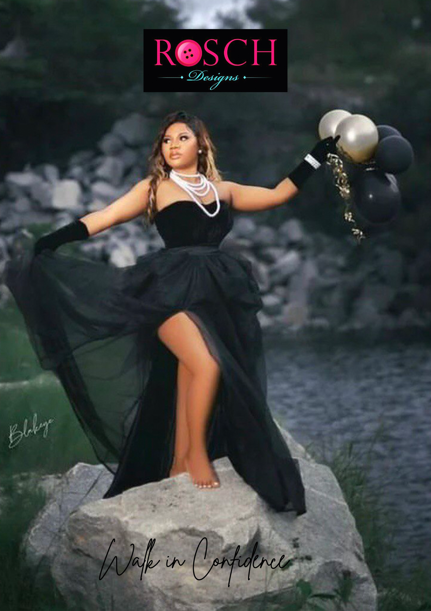

Get inspired by these fashion website designs that can help you create a better design for your fashion business. Julie Cristobal is a French stylist based in Paris. She has studied fashion at L’Atelier Chardon Savard and has awesome experiences in magazines like Wad, Crash, Jalouse and L’Officiel. Her website is a nice revelation of her personality as a fashion stylist. The website uses a horizontal scroll that highlights different fashions in clothing through thumbnails. Since it integrates the GSAP animation, web elements reveal subtle and nice animation and add elegance to the overall design.Furthermore, the about page also displays a simple layout with a black background and white typography.
Clothing and accessories best constitute fashion. You will discover various ways to enhance your fashion business in these striking fashion website designs. Bouguessa is a luxury ready-to-wear label that embodies the classic and the contemporary. It combines straight-lined designs with elegant sophistication: a refined statement that beautifies women and glorifies their personalities. It welcomes the audience with a parallax hero header with a beautiful fashion-related image. Apart from that, the images arrayed in asymmetrical layout add creativity. That’s not all, the introductory section looks interesting with the video background it implements. Moreover, the online shop shines well with the beautiful layout it uses, not to mention the superb blog display creatively.
A fashion website should correspond to the fashion business it represents. So, before you finalize your design, better check out these fashion website designs we’ve handpicked for you. Amaio is a luxury swim and resort label reflecting a sense of iconic sophistication and elegance, focusing on high-quality materials and the perfect fit. Their products are hand-sewn in Los Angeles, which uses rare and high-quality fabrics from France, Italy, and Germany. The website design is timeless, tailored design with an exceptional layout combined with the fascinating GSAP animation. The website utilizes ample quality images to build its credibility as a brand in the fashion industry. Furthermore, the content looks enticing, with white space all over the homepage.
